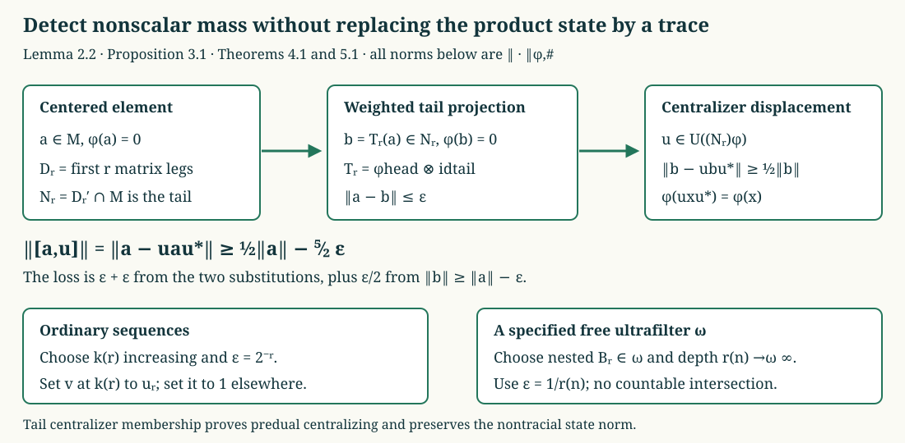

Hypercentral sequences in the type III₁ factor
A centralizing sequence can be tested against unitaries far out in a tensor product. To make that test work for a nontracial state, the unitaries must belong to the tail's centralizer. We construct them, retain the state norm in every estimate, and prove both the ordinary-sequence theorem and the factoriality of every free-ultrafilter central sequence algebra.
The argument works for any stationary product of faithful matrix states. The previously proved type III₁ uniqueness theorem then gives Takesaki XVIII.4, Theorem 4.28, at its full separable-predual scope.
1. The product and the sequence conventions
Fix \(d\ge2\), positive numbers \(p_1,\ldots,p_d\) with sum one, and
\[ h=\operatorname{diag}(p_1,\ldots,p_d),\qquad (M,\varphi)=\overline{\bigotimes_{j\ge1}} (M_d,\operatorname{Tr}(h\,\cdot)). \tag{HCT.1} \]The pointed Hilbert product, faithful normal product state, full spatial decomposition, and factor property are proved in Units, reference vectors and GNS kernels, Tail expectations and the full commutant and Faithful states and maximal modular domains. We use the finite head and its commutant
\[ D_r=\bigotimes_{j=1}^r M_d,\qquad N_r=D_r'\cap M=1\overline\otimes M_{>r}. \tag{HCT.2} \]Shifting the remaining coordinates identifies \((N_r,\varphi|_{N_r})\) with \((M,\varphi)\). On local pointed tensors the shift preserves inner products, has dense range, and intertwines the left matrix algebras. It therefore extends to an onto Hilbert unitary and a normal state-preserving algebra isomorphism.
Write
\[ \|x\|_{\varphi,\#} =\left(\frac{\varphi(x^*x)+\varphi(xx^*)}{2}\right)^{1/2}, \qquad C_r=(N_r)_{\varphi|_{N_r}}. \tag{HCT.3} \]Here the centralizer means the algebra of \(y\) for which \(\varphi(yz)=\varphi(zy)\) for every \(z\) in the algebra under consideration. These identities define an ultraweakly closed unital star algebra: moving two factors successively proves product closure, and conjugating the identity proves adjoint closure. It is therefore a von Neumann algebra. If \(y\in C_r\), the product decomposition also gives this identity for every \(z\in M\): check it on elementary head-tail products and extend by normality.
On bounded sets, convergence to zero in (HCT.3) is exactly strong* convergence. Indeed, in the product representation the reference vector \(\Omega\) is cyclic and separating. If \(x_n\Omega\to0\), then \(x_na'\Omega=a'x_n\Omega\to0\) for \(a'\in M'\); the dense set \(M'\Omega\) and the uniform operator bound give strong convergence on every vector. Apply this also to \(x_n^*\). Conversely strong* convergence gives the two terms in (HCT.3). The summable vector-coefficient description in Every tensor vector is a summable vector series through The concrete predual and its intrinsic norm identifies this bounded topology with the intrinsic normal-functional strong* topology. This argument works equally with limits along an ultrafilter.
For a normal functional \(\psi\), our module convention is
\[ (x\psi)(z)=\psi(zx),\qquad (\psi x)(z)=\psi(xz),\qquad [x,\psi]=x\psi-\psi x. \tag{HCT.4} \]A bounded sequence \((x_n)\) is centralizing, or strongly central, if \(\|[x_n,\psi]\|\to0\) for every \(\psi\in M_*\). It is hypercentral if it is centralizing and \([x_n,y_n]\to0\) strongly* for every bounded centralizing sequence \((y_n)\). It is scalar-trivial if \(x_n-\lambda_n1\to0\) strongly* for some bounded scalar sequence.
The complete proofs in 2. Which products preserve a small error give three rules used here: centralizing sequences commute strongly* with every fixed operator; bounded strongly*-zero perturbations are centralizing; and such a perturbation may be multiplied on either side by a bounded centralizing sequence. Their estimates also apply along a free ultrafilter. We do not replace a centralizing test by mere strong commutation.
For a free ultrafilter \(\omega\), let
\[ \begin{split} C_\omega(M)&=\{(x_n)\in\ell^\infty(\mathbb N,M): \|[x_n,\psi]\|\to_\omega0\ (\psi\in M_*)\},\\ J_\omega(M)&=\{(x_n)\in C_\omega(M): \|x_n\|_{\varphi,\#}\to_\omega0\},\\ M_\omega&=C_\omega(M)/J_\omega(M). \end{split} \tag{HCT.5} \]The earlier programme lesson Central sequence algebras and exact lifts, Proposition 2.1, equations (8)–(12), and Theorem 3.1, proves that \(M_\omega\) is a finite von Neumann algebra with faithful normal trace, and
\[ \tau_\omega(\pi_\omega(x))=\lim_\omega\varphi(x_n),\qquad \|\pi_\omega(x)\|_{2,\omega}^2 =\lim_\omega\|x_n\|_{\varphi,\#}^2. \tag{HCT.6} \]Its proof includes the quotient ideal, contraction lifts, complete trace-metric ball, normal trace and exact ultrafilter diagonal selection. We use those complete proofs, not an identification of the quotient with its completion by definition. Separability holds here because the local pointed tensor spaces have a countable dense union; CP-04–06 makes the predual a quotient of the resulting separable trace-class space.
2. Centralizer irreducibility by a block swap
Let \(Q_m:M\to D_m\) be the head expectation \(\mathrm{id}_{D_m}\overline\otimes\varphi_{>m}\). ITP-03 proves
\[ \varphi Q_m=\varphi,\qquad \|Q_m(a)\|\le\|a\|,\qquad Q_m(a)\longrightarrow a\quad\hbox{strongly*}. \tag{HCT.7} \]Proposition 2.1. The product centralizer has scalar relative commutant:
\[ M_\varphi'\cap M=\mathbb C1,\qquad C_r'\cap N_r=\mathbb C1\quad(r\ge0). \tag{HCT.8} \]Proof. In \(D_{2m}\), let \(U_m\) exchange its first block of \(m\) tensor legs with its second block of \(m\) legs. This is an actual permutation unitary in the full matrix algebra. It commutes with \(h^{\otimes2m}\), so it belongs to \(M_\varphi\). The latter assertion follows first on any finite larger head from the matrix trace identity, and then on \(M\) by normality. In particular conjugation by \(U_m\) preserves both terms in (HCT.3).
Take \(a\in M_\varphi'\cap M\), subtract \(\varphi(a)1\), and retain \(a\) for the centered element. Put \(b_m=Q_m(a)\); it too has mean zero. The two elements \(b_m\) and \(U_mb_mU_m^*\) lie in disjoint tensor blocks. Product-state factorization makes their cross terms zero, giving
\[ \|b_m-U_mb_mU_m^*\|_{\varphi,\#}^2 =2\|b_m\|_{\varphi,\#}^2. \tag{HCT.9} \]For example, \(\varphi(b_m^*U_mb_mU_m^*)=\varphi(b_m^*)\varphi(b_m)=0\); the other square has the same factorization. Since \(U_maU_m^*=a\),
\[ \sqrt2\,\|b_m\|_{\varphi,\#} \le2\|a-b_m\|_{\varphi,\#}\longrightarrow0. \tag{HCT.10} \]But \(b_m\to a\) in that norm, so \(a=0\) by faithfulness. This proves the first assertion. The coordinate shift in Section 1 proves the tail assertion. \(\square\)
This proof needs no identification of the centralizer in advance. It uses stationarity of the product state to make the block swap preserve that state.
Lemma 2.2 (centralizer displacement). For \(b\in N_r\) with \(\varphi(b)=0\), some \(u\in\mathcal U(C_r)\) satisfies
\[ \|b-ubu^*\|_{\varphi,\#} \ge\frac12\|b\|_{\varphi,\#}. \tag{HCT.11} \]Proof. Let \(K\) be the ultraweakly closed convex hull of \(\{ubu^*:u\in\mathcal U(C_r)\}\), inside the operator-norm ball of radius \(\|b\|\) in \(N_r\). That ball is ultraweakly compact by the predual identification CP-06 and the complete dual-ball proof Dual-ball compactness and the bidual criterion. Hence \(K\) is compact.
The function \(x\mapsto\|x\|_{\varphi,\#}\) is ultraweakly lower semicontinuous. For the first square this follows from
\[ \varphi(x^*x)^{1/2} =\sup_{\varphi(c^*c)\le1}|\varphi(c^*x)|; \tag{HCT.12} \]Schwarz gives one inequality and \(c=x/\varphi(x^*x)^{1/2}\) gives the other when \(x\ne0\). Every scalar pairing is normal. Apply the same formula to \(x^*\) for the second square. The sum of the two nonnegative lower semicontinuous squares is lower semicontinuous.
The nested compact sublevel sets therefore give a point of least norm in \(K\). The parallelogram identity and faithfulness make it unique: the midpoint of two distinct minimizers would have smaller norm. Conjugation by every \(u\in\mathcal U(C_r)\) preserves \(K\) and the norm, so it fixes the minimizer. Commuting with all these unitaries implies commuting with \(C_r\): a self-adjoint contraction \(c\) is the real part of the unitary \(c+i(1-c^2)^{1/2}\), and scaling, real parts and imaginary parts cover the algebra. Proposition 2.1 makes the minimizer scalar. Every element of \(K\) has mean zero by normality and centralizer invariance, so the minimizer is zero.
If \(b\ne0\) and (HCT.11) failed for every unitary, the whole orbit, and hence its closed convex hull, would lie in the closed norm ball of radius \(\|b\|_{\varphi,\#}/2\) about \(b\). Lower semicontinuity makes that ball ultraweakly closed. It cannot contain zero, a contradiction. For \(b=0\), take \(u=1\). \(\square\)
3. A state-preserving projection onto the tail
Index the matrix units of \(D_r\) by words of length \(r\). Write \(e_{ij}\) for these units and \(q_i=\prod_{\ell=1}^r p_{i_\ell}\) for the diagonal state weights. Define
\[ T_r(x)=\sum_{i,j}q_i e_{ji}xe_{ij}. \tag{HCT.13} \]Proposition 3.1. This is the normal unital completely positive expectation onto \(N_r\) given by \(\varphi|_{D_r}\overline\otimes\mathrm{id}_{N_r}\). It preserves \(\varphi\), contracts \(\|\cdot\|_{\varphi,\#}\), and
\[ T_r(x)-x=\sum_{i,j}q_i e_{ji}[x,e_{ij}]. \tag{HCT.14} \]Consequently, for any bounded ordinary or \(\omega\)-centralizing sequence \((x_n)\), and each fixed \(r\),
\[ \|T_r(x_n)-x_n\|_{\varphi,\#}\longrightarrow0 \quad\hbox{in the corresponding sense}. \tag{HCT.15} \]Proof. On a matrix coefficient \(e_{ab}y\), \(y\in N_r\), the sum in (HCT.13) is \(\delta_{ab}q_a y\). Finite matrix decomposition gives the asserted expectation on all of \(M=D_r\overline\otimes N_r\). It is normal and completely positive because it is a finite sum of maps \(x\mapsto v^*xv\), with \(v=\sqrt{q_i}\,e_{ij}\). Also \(\sum_{i,j}q_i e_{ji}e_{ij}=1\), so it is unital and (HCT.14) follows.
Here is the square estimate without a trace assumption. Form the column isometry \(V\) with entries \(\sqrt{q_i}e_{ij}\), and let \(\widetilde x\) act diagonally on the corresponding finite direct sum. Then
\[ \begin{split} T_r(x^*x)-T_r(x)^*T_r(x) &=V^*\widetilde x^*(1-VV^*)\widetilde xV\ge0. \end{split} \tag{HCT.16} \]Apply the same identity to \(x^*\). State preservation follows from the elementary product formula. Applying \(\varphi\) to both inequalities proves contraction in (HCT.3). Finally ECA-02 gives strong* convergence of each fixed commutator in (HCT.14). The finite sum and fixed multipliers preserve that convergence, proving (HCT.15). \(\square\)
The coefficients in (HCT.13) are the product-state weights \(q_i\). Replacing them by uniform weights would preserve a different head state in general.
Lemma 3.2 (tail centralizing test). Suppose \((y_n)\) is bounded and \(y_n\in C_{r(n)}\), with \(r(n)\to\infty\) ordinarily or along \(\omega\). Then \((y_n)\) is centralizing in the same sense on the whole algebra \(M\).
Proof. For \(a,b\) in a fixed finite head consider \(\rho_{a,b}(z)=\varphi(b^*za)\). If \(r(n)\) lies past that head, then \(y_n\) commutes with \(a,b\), and Section 1 gives \(\varphi y_n=y_n\varphi\) on all of \(M\). Thus
\[ \varphi(b^*y_nza)=\varphi(y_nb^*za) =\varphi(b^*zay_n)=\varphi(b^*zy_na), \tag{HCT.17} \]so \([y_n,\rho_{a,b}]=0\).
The span of these functionals is norm dense in \(M_*\). The vectors \(a\Omega,b\Omega\) from finite heads are dense in the product Hilbert space; their vector coefficients approximate arbitrary vector coefficients in norm. CP-04–06 represents every normal functional by a summable series of such coefficients. Finally
\[ \|[y_n,\psi-\rho]\| \le2\sup_n\|y_n\|\,\|\psi-\rho\| \tag{HCT.18} \]extends the conclusion to each normal functional. The proof uses only eventual membership past each fixed head, which has exactly the stated ultrafilter counterpart. \(\square\)
4. Ordinary hypercentral sequences are scalar-trivial
Theorem 4.1. Every bounded hypercentral sequence in the product (HCT.1) is scalar-trivial. Conversely every bounded scalar-trivial sequence is hypercentral.
Proof. A sequence is scalar-trivial exactly when
\[ \|x_n-\varphi(x_n)1\|_{\varphi,\#}\longrightarrow0. \tag{HCT.19} \]For if \(z_n=x_n-\lambda_n1\to0\) in that norm, Schwarz gives \(|\varphi(z_n)|\le\sqrt2\|z_n\|_{\varphi,\#}\), so subtracting its mean preserves convergence. The converse uses the bounded scalars \(\varphi(x_n)\).
Suppose a bounded centralizing \((x_n)\) is not scalar-trivial. Subtract its bounded scalar means and retain \(x_n\) for the centered sequence. Some \(\delta>0\) satisfies \(\|x_n\|_{\varphi,\#}\ge\delta\) on infinitely many indices. By (HCT.15), we can choose increasing \(k(r)\) such that
\[ \|x_{k(r)}\|_{\varphi,\#}\ge\delta,\qquad \|T_r(x_{k(r)})-x_{k(r)}\|_{\varphi,\#}\le2^{-r}. \tag{HCT.20} \]The first condition holds infinitely often; for each fixed \(r\), the second holds eventually. Thus an increasing choice exists.
Set \(b_r=T_r(x_{k(r)})\in N_r\), of mean zero. Lemma 2.2 supplies \(u_r\in\mathcal U(C_r)\). Since conjugation by \(u_r\) preserves the state norm, the two approximation errors give
\[ \begin{split} \|x_{k(r)}-u_rx_{k(r)}u_r^*\|_{\varphi,\#} &\ge\frac12\|b_r\|_{\varphi,\#}-2^{1-r}\\ &\ge\frac{\delta}{2}-\frac52\,2^{-r}. \end{split} \tag{HCT.21} \]Define \(v_{k(r)}=u_r\) and \(v_n=1\) at every other original index. This sequence is centralizing: for each fixed head, all sufficiently late nonidentity terms lie in its tail centralizer, and the other terms are identities. The proof of Lemma 3.2 applies.
Right multiplication by a centralizer unitary preserves (HCT.3): one square is unchanged directly, and the other is unchanged by \(\varphi(uzu^*)=\varphi(z)\). Therefore
\[ \|[x_{k(r)},v_{k(r)}]\|_{\varphi,\#} =\|x_{k(r)}-u_rx_{k(r)}u_r^*\|_{\varphi,\#}. \tag{HCT.22} \]The positive lower limit in (HCT.21) contradicts hypercentrality. The witness was defined on every original index, not only on the chosen subsequence.
Conversely, if \(x_n=\lambda_n1+z_n\) with \(z_n\to0\) strongly*, ECA-02 makes it centralizing and gives \(z_ny_n-y_nz_n\to0\) strongly* for each bounded centralizing \((y_n)\). Thus it is hypercentral. \(\square\)

Figure 1. The tail expectation preserves the nontracial product state. Its approximation error is counted twice when moving between \(a\) and \(b\); the displacement estimate loses an additional \(\varepsilon/2\) through \(\|b\|\ge\|a\|-\varepsilon\). The exact lower bound is (HCT.21). The ordinary and ultrafilter selections are proved separately in Theorems 4.1 and 5.1. Source context: Takesaki III, XVIII.4, Theorem 4.28, pp.399–400.
5. Every free-ultrafilter quotient has scalar center
Theorem 5.1. For every free ultrafilter \(\omega\),
\[ Z(M_\omega)=\mathbb C1. \tag{HCT.23} \]Proof. Suppose a central quotient element \(A\) is not scalar. Choose a bounded representative in \(C_\omega(M)\). Subtract the coordinate means \(\varphi(x_n)1\). By (HCT.6), the new class is \(A-\tau_\omega(A)1\ne0\). Retain \(A,x_n\) for these centered objects, and put
\[ \delta=\|A\|_{2,\omega}>0,\qquad \varphi(x_n)=0,\qquad \lim_\omega\|x_n\|_{\varphi,\#}=\delta. \tag{HCT.24} \]For each \(r\ge1\), choose a set \(B_r\in\omega\) on which
\[ \|x_n\|_{\varphi,\#}\ge\delta/2,\qquad \|T_r(x_n)-x_n\|_{\varphi,\#}\le1/r. \tag{HCT.25} \]The second condition follows from (HCT.15). Intersect with the previous \(B_{r-1}\) and with \(\{n:n\ge r\}\), taking \(B_0=\mathbb N\). Only finitely many intersections are used at any step.
Let \(r(n)\) be the largest \(r\le n\) with \(n\in B_r\), or zero if there is none. For each fixed \(s\),
\[ B_s\subset\{n:r(n)\ge s\}; \quad\hbox{hence }r(n)\to_\omega\infty. \tag{HCT.26} \]This does not require the countable intersection of the \(B_r\) to be large.
When \(r(n)>0\), put \(b_n=T_{r(n)}(x_n)\), and choose \(u_n\in\mathcal U(C_{r(n)})\) by Lemma 2.2. Otherwise put \(u_n=1\). Lemma 3.2 and (HCT.26) show that \((u_n)\in C_\omega(M)\); its class is a unitary. On \(B_1\) the same two-error estimate as in (HCT.21) gives
\[ \|x_n-u_nx_nu_n^*\|_{\varphi,\#} \ge\frac{\delta}{4}-\frac{5}{2r(n)}. \tag{HCT.27} \]Its ultralimit is at least \(\delta/4>0\). By centrality of \(A\), however, the sequence \([x_n,u_n]\) belongs to \(J_\omega\). Its norm in (HCT.3) must tend to zero. Centralizer right multiplication identifies that norm with the left side of (HCT.27), a contradiction. This proves (HCT.23). \(\square\)
The ordinary theorem alone did not prove this assertion. Here the varying depth \(r(n)\) is chosen for the specified ultrafilter and for its particular quotient representative.
6. Small projections exclude a finite matrix quotient
Theorem 6.1. For every free ultrafilter, \(M_\omega\) is a factor of type \(\mathrm{II}_1\).
Proof. Its faithful normal finite trace is (HCT.6), and Theorem 5.1 gives factoriality. It remains to exclude type I; this does not follow merely from constructing one noncommuting pair.
Fix \(k\ge1\). For coordinate \(n\), let \(e_n^{(k)}\) be the product of the diagonal projection \(e_{11}\) in tensor legs \(n+1,\ldots,n+k\), with identities in the other legs. It is a projection in \(C_n\), and
\[ \varphi(e_n^{(k)})=p_1^k. \tag{HCT.28} \]Lemma 3.2 makes \((e_n^{(k)})\) ordinary centralizing, hence centralizing along every free ultrafilter. Its quotient projection \(E_k\) satisfies
\[ 0<\tau_\omega(E_k)=p_1^k\longrightarrow0 \quad(k\to\infty). \tag{HCT.29} \]Here is the precise finite type test. A finite factor with a nonzero abelian projection is type I: every other nonzero projection has central carrier one, and the abelian-projection comparison in Finite type I algebras have finite matrix pieces places a nonzero abelian copy below it. The finite matrix-piece construction in the same section gives a nonzero central summand \(M_m(D)\), with \(D\) abelian. In a factor that summand is the whole algebra and \(D=\mathbb C\). Thus such a factor is \(M_m(\mathbb C)\) for some finite \(m\). A normalized trace there assigns every nonzero projection at least \(1/m\): equal diagonal units have trace \(1/m\), off-diagonal units have trace zero, and unitary diagonalization computes the trace of any projection. This contradicts (HCT.29).
There is consequently no nonzero abelian projection in \(M_\omega\). A nonzero finite factor with this property is type \(\mathrm{II}_1\). No separability of the quotient predual was asserted or needed. \(\square\)
7. The AFD type III₁ theorem
Theorem 7.1. Let \(\mathcal R\) be an AFD factor of type \(\mathrm{III}_1\) with separable predual. Every bounded strongly hypercentral sequence is scalar-trivial, and for every free ultrafilter \(\omega\), \(\mathcal R_\omega\) is a factor of type \(\mathrm{II}_1\).
Proof. The complete uniqueness proof 11. The three-factor comparison and uniqueness, with the concrete products in UNI-02, gives
\[ \mathcal R\cong R_{1/2}\overline\otimes R_{1/3}. \tag{HCT.30} \]Pair the \(n\)-th \(M_2\) leg in the first product with the \(n\)-th leg in the second. On elementary pointed Hilbert tensors this pairing preserves inner products and has dense range, so it extends to an onto unitary and a normal state-preserving identification with (HCT.1), for \(d=4\). After ordering the basis, its probability vector is
\[ (p_1,p_2,p_3,p_4) =\left(\frac12,\frac14,\frac16,\frac1{12}\right). \tag{HCT.31} \]Indeed these are the products of the two diagonal probability vectors \((2/3,1/3)\) and \((3/4,1/4)\). The pairing identifies the generated von Neumann algebras, not only their algebraic tensor subalgebras. Theorem 4.1 and Theorem 6.1 apply.
For clarity, the sequence properties transport through every normal algebra isomorphism \(\Theta\). Normal-functional pullback is an isometric bijection, and
\[ [\Theta(x),\psi] =[x,\psi\circ\Theta]\circ\Theta^{-1}. \tag{HCT.32} \]Thus it preserves both kinds of centralizing convergence. Normal positive functional pullback preserves intrinsic bounded strong* convergence, hence scalar triviality and hypercentrality. It sends \(J_\omega\) onto \(J_\omega\) and induces a trace-preserving quotient isomorphism by (HCT.6). The quotient trace Hilbert implementation makes this isomorphism normal with normal inverse, as in the proof of the earlier quotient theorem. Therefore all the conclusions hold on \(\mathcal R\). \(\square\)
This proves Takesaki, Theory of Operator Algebras III, XVIII.4, Theorem 4.28, pp.399–400. The state-preserving tail map and the explicit free-ultrafilter selection supply the two distinct limiting arguments. The stationary-product proof also covers every fixed faithful matrix probability vector, including tracial products and the Powers products.
8. Worked checks
Problem 1. Why is a tail unitary, without a centralizer condition, insufficient in the nontracial proof?
Solution. Commuting with larger finite heads controls fixed operator commutators. It need not give norm commutation with the product state. For a fixed matrix \(y\), its copy in a far leg has the same state-commutator defect as in the first leg, tested on matrices in that leg. If \(hy\ne yh\), that defect is nonzero at every stage. The centralizer condition gives the exact functional identity (HCT.17) and preserves the state norm under the conjugations in (HCT.21).
Problem 2. Check the weighted tail projection on \(e_{ab}z\), \(z\in N_r\).
Solution. Matrix multiplication gives
\[ \sum_{i,j}q_i e_{ji}e_{ab}e_{ij}z =\delta_{ab}q_a\sum_j e_{jj}z =\delta_{ab}q_a z. \]This is \(\varphi|_{D_r}(e_{ab})z\). Uniform coefficients would instead give \(\delta_{ab}z/d^r\), which changes the preserved state unless the head probabilities are uniform.
Problem 3. Where does the constant \(5/2\) come from?
Solution. If \(\|a-b\|_{\varphi,\#}\le\varepsilon\) and the selected centralizer unitary displaces \(b\) by at least \(\|b\|_{\varphi,\#}/2\), then
\[ \|a-uau^*\|_{\varphi,\#} \ge\tfrac12(\|a\|_{\varphi,\#}-\varepsilon)-2\varepsilon =\tfrac12\|a\|_{\varphi,\#}-\tfrac52\varepsilon. \]The two full errors come from the two appearances of \(a\); the half error comes from the norm lower bound for \(b\).
Problem 4. Why does a noncommuting pair not prove that the quotient is type \(\mathrm{II}_1\)?
Solution. The finite factor \(M_2(\mathbb C)\) contains noncommuting elements. It is nevertheless type I. Our proof first establishes scalar center, then constructs nonzero projections of arbitrarily small normalized trace. Formula (HCT.29) excludes every finite matrix size, which a single noncommuting pair cannot do.